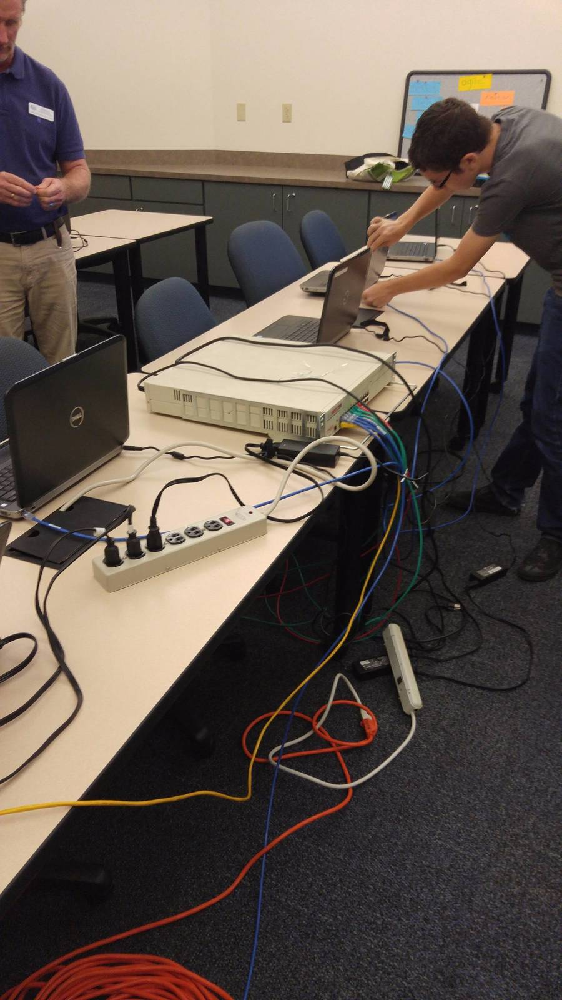
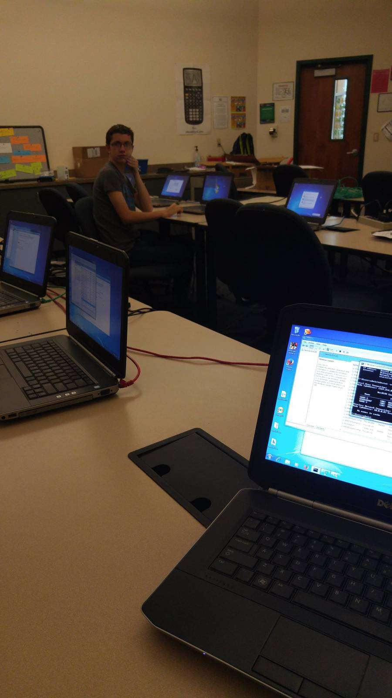
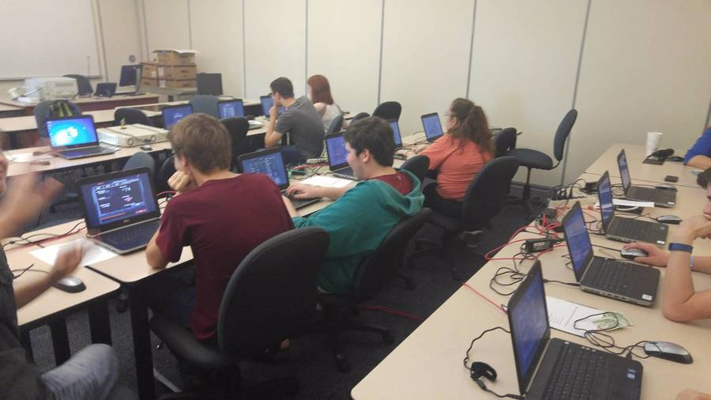
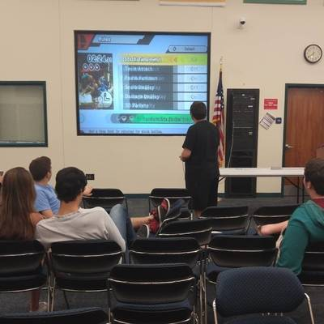

Thank you for showing interest in being part of Computer Club!
In the first image here, you can see that we have donated laptops to underprivilaged middle schoolers, but not only that, we set up a dual boot with both Windows 10 and Ubuntu 16.04.
We try our best to give back to the community, but we need funding to do so, so we hold what we like to call Game Night once every semester. The money we make off of Game Night goes into our funding so we can do more things. As of the moment, we are working to get a drone program up and running as well as learning how to take apart and repair phones and computers. Here you can learn how to do some programming, hardware fixing, or just even learn about computers and tech in general if you are a beginner. This club is open to everyone of all skill levels. At the end of the year, if you attend the meetings, we will be doing a trip to Islands of Adventure up in Orlando for a day.
Next, we are going to show you some photos of previous Game Night's
The next few photos you will see is basically Computer Club members setting up a LAN tournament for Game Night, as well as people who attended Game Night playing it.
Here we are setting up the switch to connect to the laptops.
Here we started to configure the laptops to talk with each other properly with the switch.
It's in the middle of the Mech Warrior tournament where people are fighting each other to win a prize. They created their own characters and played 10 minute matches against each other, dropping the bottom people out of the tournament. It was very intense.
This next photo is of the main tournament, the Smash 4 tournament on the Wii U.
The players are choosing their players and settings for the first match of the night. The best character to choose that Game Night was Villager.
We also created a Game Night advertisement, which is a project Computer Club does, so next year you will be making one of these. It will probably be better than this.